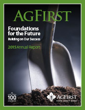
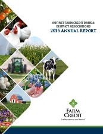

AgFirst Farm Credit Bank 2015 Annual Report

AgFirst Farm Credit Bank & District Associations 2015 Annual Report
2016 AgFirst Farm Credit Bank Annual Meeting Information Statement
FINANCIALS REPORTS
Financial Report Archives